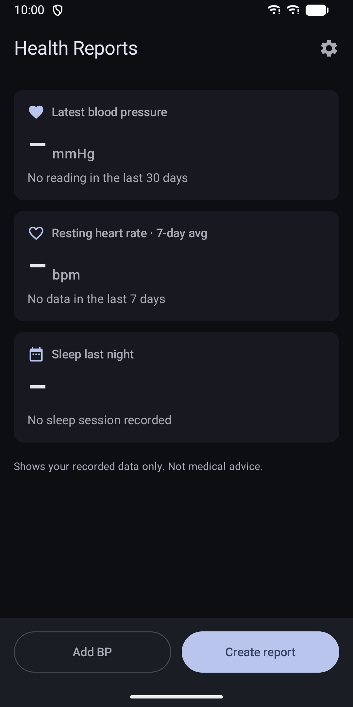
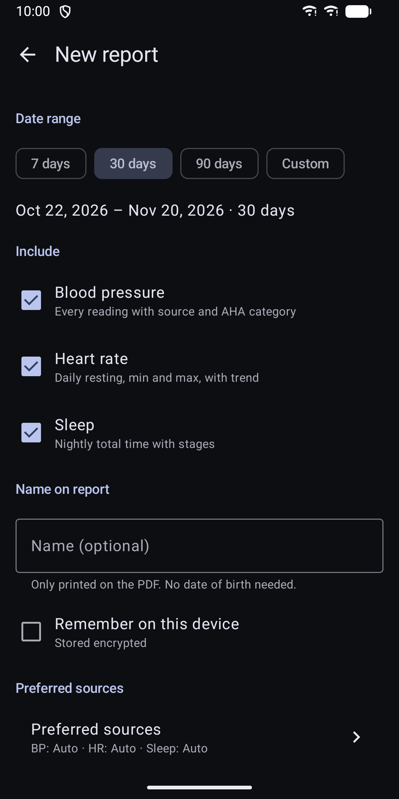

Health Reports: BP & Sleep PDF
Turn Health Connect blood pressure, heart rate and sleep into a PDF report.





About
Health Reports turns the blood pressure, heart rate and sleep data in Health Connect into one clean PDF that you can bring to a doctor's visit. Pick a date range of 7, 30 or 90 days, or choose your own dates. The report starts with a summary page, then lists the details: - Summary: average, lowest and highest blood pressure and heart rate, resting heart rate trend, average sleep length and how many readings fall in each blood pressure category. - Blood pressure: a table of every reading with time, source app and its AHA category in neutral wording. - Heart rate: daily resting, lowest and highest values with a trend chart. - Sleep: a nightly table with total time and sleep stages, plus a stage summary. Other features: - Preview every page before you share it. - Share the PDF by email or message, or print it, through the normal Android share sheet and print dialog. - Add a blood pressure reading by hand, with pulse if you like. It is saved to Health Connect. - Duplicate readings from different apps are merged. You can choose a preferred source app for each metric. - Add your name to the report if you want. No date of birth is needed. The name is only saved if you ask for it, and it is encrypted on your phone. - A home screen widget shows your last blood pressure reading and your 7-day average resting heart rate. - Light and dark theme follow your system. Works on phones and tablets. Privacy: The app has no internet permission, no account and no analytics. It does not keep a copy of your health data. Health Connect stays the only place where the data lives. The temporary PDF is deleted when you leave the preview. The report goes only where you choose to send it. Purchase: Your first export is available without payment. After that, sharing and printing more reports needs a one-time in-app purchase called Unlimited reports. Viewing your data, previewing reports, adding readings and the widget do not need a purchase. You can restore the purchase in Settings. Requirements: Android 9 or newer. Android 14 and newer include Health Connect. On Android 9 to 13, install the Health Connect app from Google Play. You also need an app or device that writes blood pressure, heart rate or sleep to Health Connect, or you can add blood pressure readings by hand. Important: Health Reports shows recorded values only. It gives no diagnosis and no medical advice. Talk to your doctor about what your readings mean.
Guides
- Average Blood Pressure Calculator for Home Readings Average your home blood pressure readings, see the lowest, highest and AHA category, and learn the formula with a worked example.
- Blood Pressure Categories Chart (AHA, mmHg) AHA blood pressure chart with the five categories, the exact mmHg limits, how "or" rules work, and worked examples for home readings.
- How to Make a Blood Pressure PDF from Health Connect Step-by-step: turn blood pressure, heart rate and sleep stored in Android Health Connect into a PDF report you can share or print for your doctor.